Meddbase already enables users to share individual documents to the Occupational Health (OH) Portal using the ‘Share with Employer’ feature.
Meddbase now has Document type security functionality to enable authorised users to:
This article outlines:
As a first step, the Meddbase Administrator must configure System features to enable Document type security.
To do this:
1. Go to Admin > Configuration.
2. Select System features.
3. In the Portal group, check Document type security.
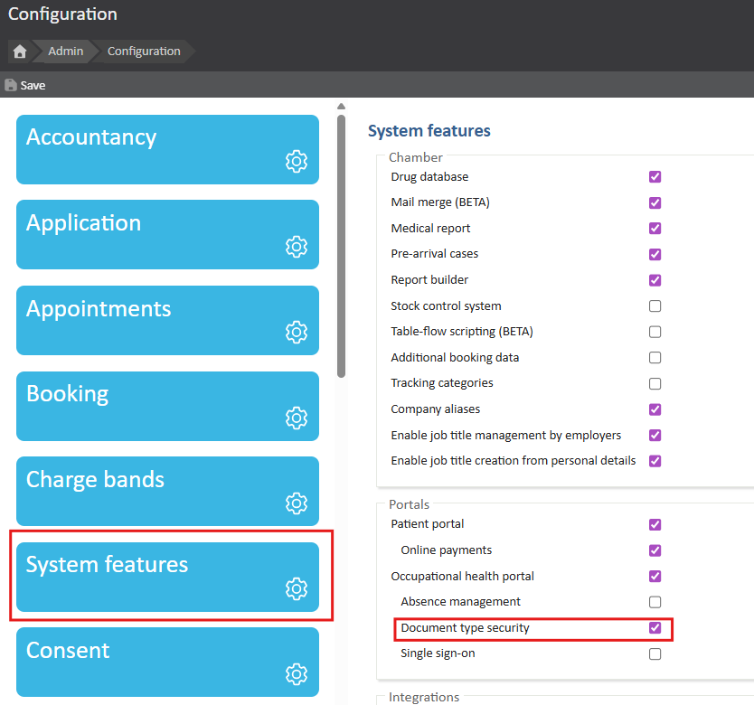
A System feature selected dialog appears.
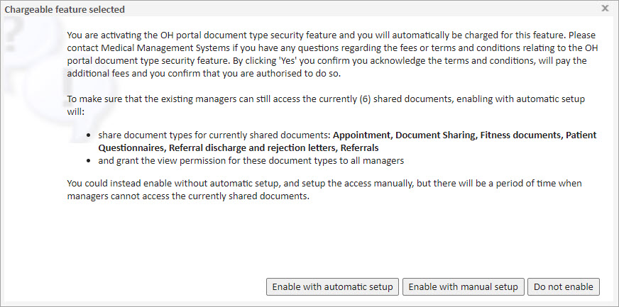
From here the user has three choices which are explained below.
| Option | What this means |
|---|---|
| Enable with automatic setup | The Document type security feature is enabled. Any Document types for which documents have already been shared with employers on the OH Portal, are automatically configured to be shared. |
| Enable without automatic setup | The Document type security feature is enabled. No document types are set to be shared by default to the OH Portal. |
| Do not enable | The feature is not enabled. |
Where the Meddbase Administrator wants to automatically share Documents types for previously shared document:
4. Select Enable with automatic setup
5. Save the setting update on the Configuration page
By doing this, the Document type security option is enabled.
With the System feature activated, configuration is required at the Document type level.
To configure a Document type so that documents of that type are shareable to the OH Portal:
1. From the Start page, select Templates
2. On the Templates page, navigate to the required Document type
3. With the Document type displayed, tick the Share with employer box
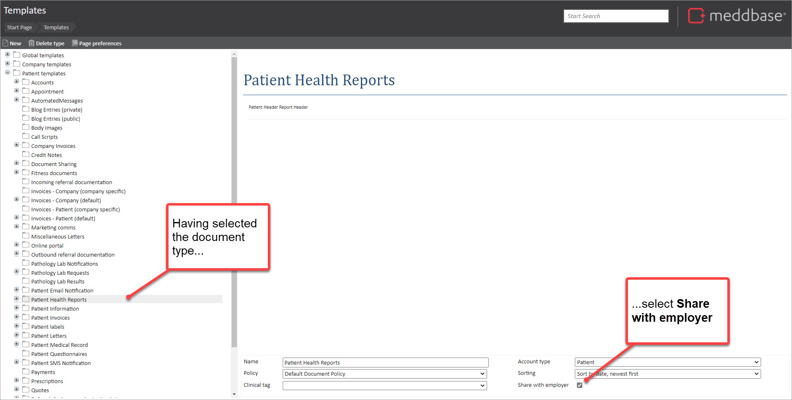
To change the configuration of a Document type where documents were previously shareable can be done as follows:
1. From the Start page, select Templates
2. On the Templates page, navigate to the required Document type
3. With the Document type displayed, untick Share with employer
If documents of that Document type have already been shared with the patient’s employer on the OH Portal, an Unshare document type dialog is presented. Similar to the one shown below.
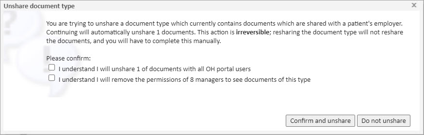
To continue with the unsharing process:
4. Tick both the I understand… tick boxes
5. Select Confirm and unshare
By doing this:
These Document type sharing settings will have implications for Meddbase users, depending on the permissions they have. Below are some examples to help explain what this means in practice.
If it is the case that:
To do this:
1. Search for and select the patient record (that represents the OH Portal User)
2. Go to Online Portals > Referral Portal > Portal Account Settings
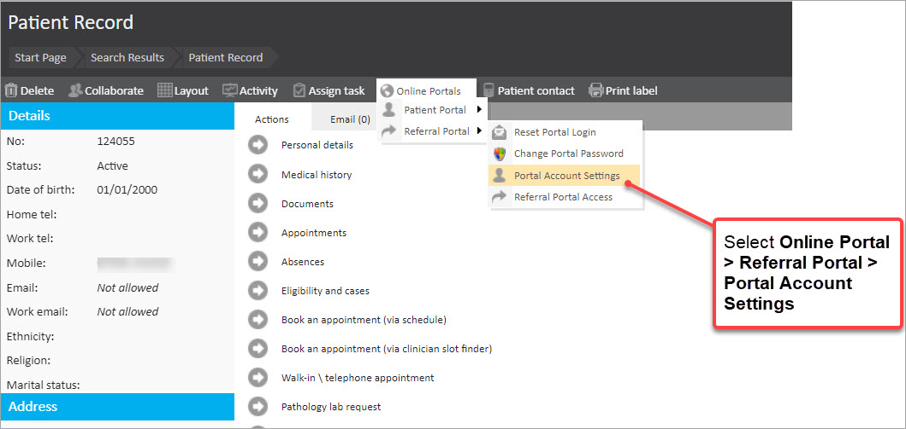
In the Referral Portal Account dialog, there is a Document types panel.
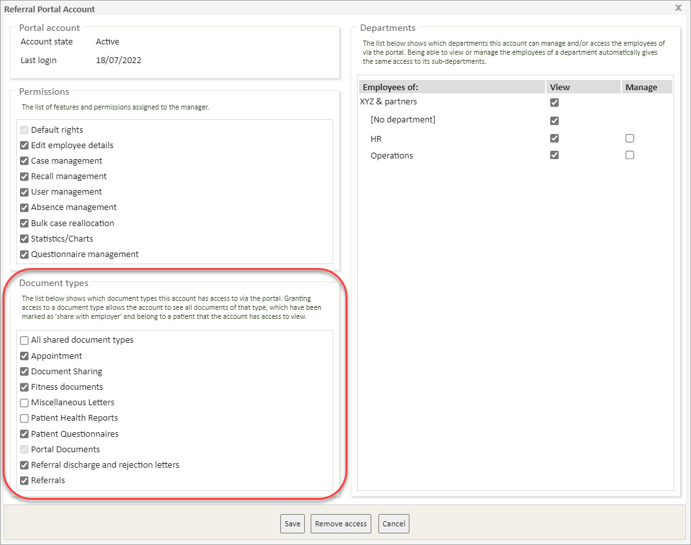
This shows:
It doesn’t show:
From here:
3. Change the Document type permissions by
4. Select Save
If it is the case that:
To do this:
1. Search for and select the patient record
2. Select Documents from Actions panel on the patient record
3. From the list of documents on the left, select the document to be shared
4. For that document, select the with the employer tick box
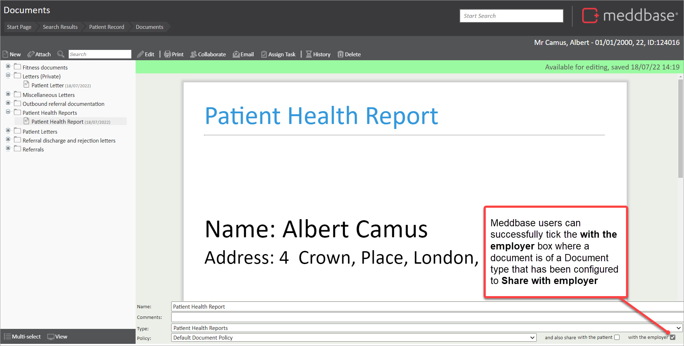
Then the document is successfully shared with the employer and is available on the OH Portal.
If it is the case that:
To try this:
1. Search for and select the patient record
2. Select Documents from Actions panel on the patient record
3. From the list of documents on the left, select the document to be shared
4. For that document, attempt to select the with the employer tick box
At this point, Meddbase presents a notification advising that the sharing status of the document cannot be changed.
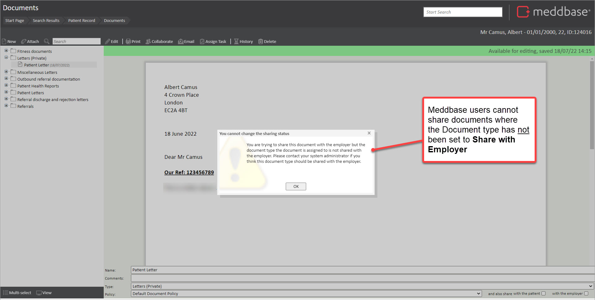
These Document type sharing settings will also have implications for OH Portal users, depending on:
Below are some examples to help explain what this means in practice.
If it is the case that:
To set accessible Document types, OH Portal User ‘Alpha’ can do as follows:
1. Navigate to the Users overview section of the OH Portal
2. Search for the user record for 'Beta'
3. Select the user record
4. Tick the check-boxes for the Accessible document types
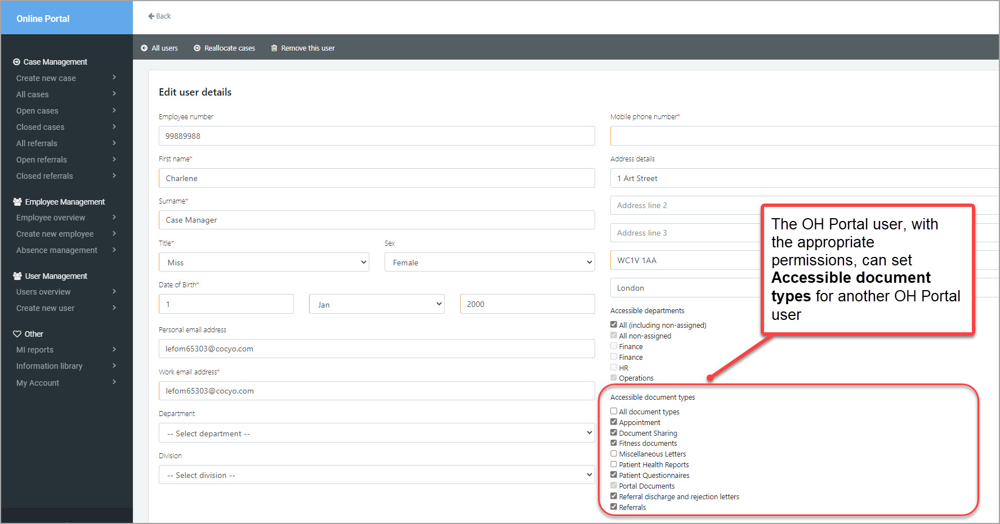
5. Save the update
If it is the case that:
To view documents the OH Portal user can do as follows:
1. Navigate to the Employees section of the OH Portal
2. Search for the employee record
3. Select the employee record
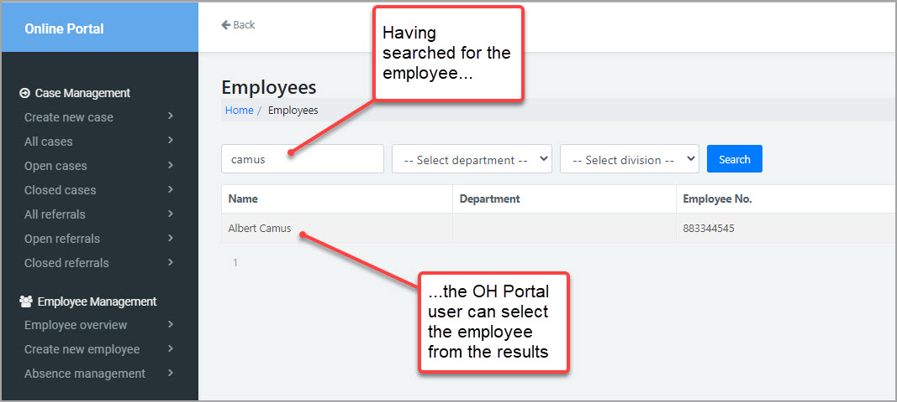
4. Navigate to Shared Documents
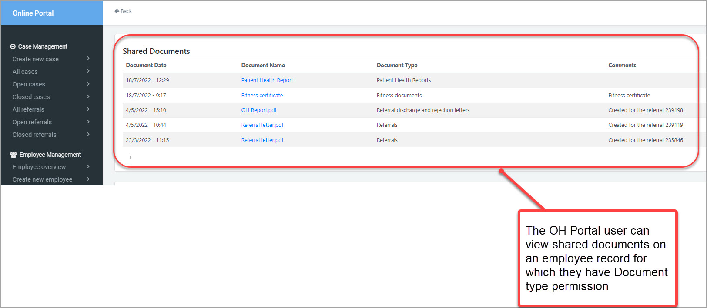
Then the OH Portal user can view documents of the permitted types for a patient/employee on the OH Portal.
If it is the case that:
If it is the case that: